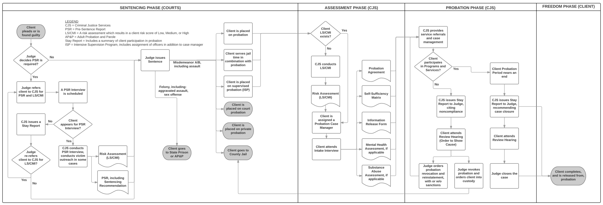

Salt Lake County & Code for America, 2016 Mid-Year Report
Salt Lake County & Code for America, 2016 Mid-Year Report



Above: Criminal justice system probation trajectory system diagram.
Select Project: System Diagramming
This project involved interviewing dozens of staff at Criminal Justice Services (CJS), as well as running a number of workshops in order to develop a complete system diagram of CJS. This is not something that had ever been prior accomplished. The result enabled us to better understand each individual's context within the broader system, which has made the deployment of ClientComm far more effective thanks to intelligent targeting of key individuals.